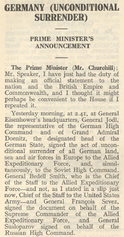
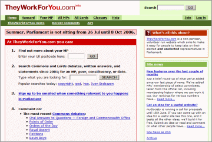
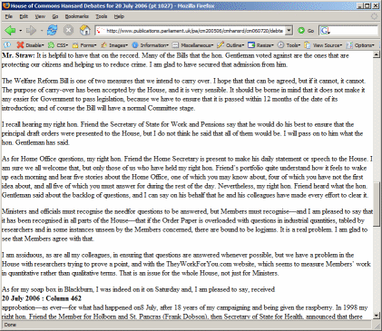
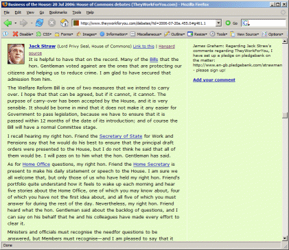

Matthew Somerville
BarCamp London
2–3 September 2006
A History

Murmured beginnings around August 2003
Set up almost entirely by volunteers
Launched at NotCon in June 2004
Winner of the Contribution to Civic Society Award at the New Statesman New Media Awards 2005
Now part of mySociety
Current Scope

House of Commons, since May 2001:
Debates,
Westminster Hall debates,
Written answers,
Written ministerial statements,
Register of Members’ Interests,
Select committee memberships,
Ministerialships
House of Lords, since 1999: Debates, Written answers,
Written ministerial statements
Both: Voting history, external links, various statistics, and more
Staying on top
Daily updated (when Parliament is in session) from parliament.uk by a Python scraper and parser
Changes at their end can prove… frustrating, but some things make it all worthwhile
In the House of Lords, Lord Gould said we (well, mySociety) were the “probably the biggest single catalyst for political change in this country”
In the House of Commons, Jack Straw blamed us this July for an increase in Written Questions by MPs, saying it “seems to measure Members' work in quantitative rather than qualitative terms”
The API
Awarded funding by the Department for Constitutional Affairs
Build an API, and hold developer events
Provide access to the data we have, for unthought-of ideas
Functions
getDebates, getWrans, getWMS
Meaty functions to return actual sections of Hansard. Results by date, year, search, person.
getMPs, getMP, getMPinfo, getLords, getLord
Fetch lists of MPs or Lords, or information about particular ones.
Individual MPs can be looked up by id, constituency, or postcode
getConstituency
Given a postcode, this returns the constituency that postcode is in.
getConstituencies
Returns list of constituencies, filtered by date, search term, or proximity to a particular location
getCommittee
Fetches information on select committees, and their current members
getGeometry, getBoundary
These functions return geographical information for constituencies, such as
bounding box, centre, area in square metres, and coordinates of its boundary.
getComments
Search/filter comments people have left.
Examples
convertURL
Given a parliament.uk URL, returns an equivalent TheyWorkForYou URL
This leads to the obvious bookmarklet, the Hansard prettifier.
Should you find yourself on the official site, a simple click on this
and you’ll be taken to the equivalent page on TheyWorkForYou,
if it can be done:
 → 